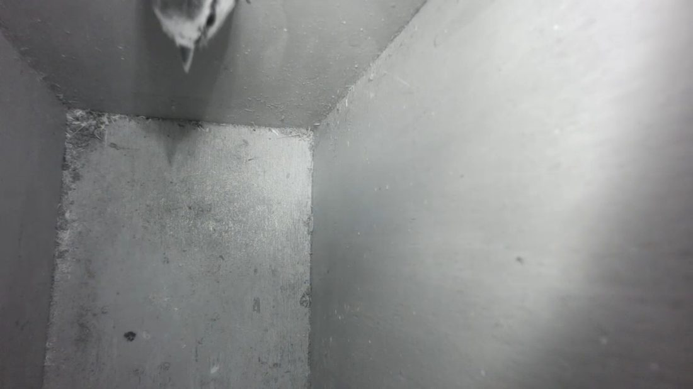
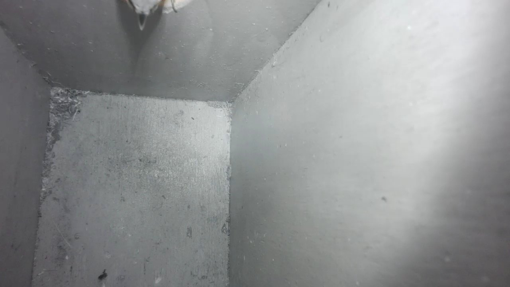
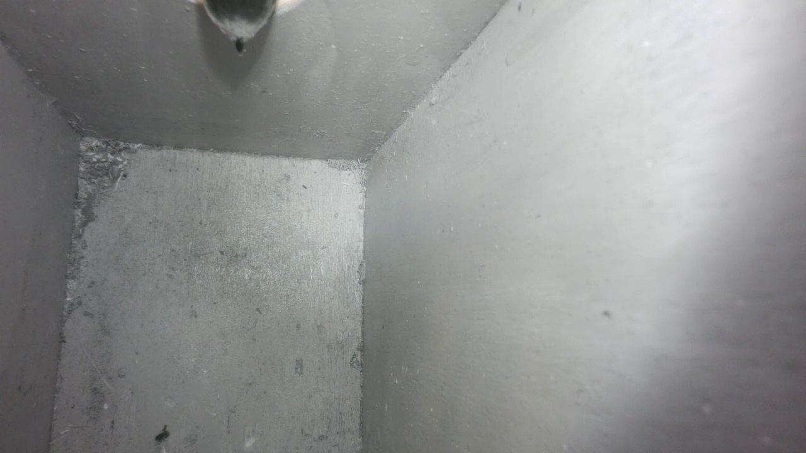
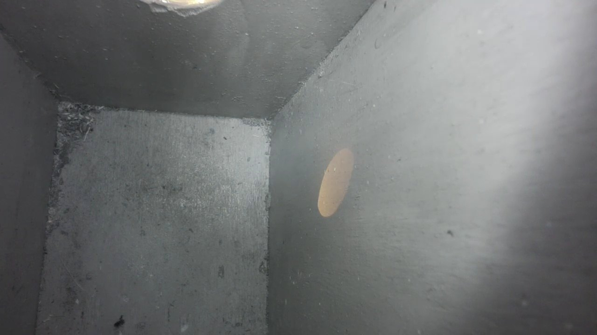

Results
The box went up in October 2026, so the honest summary is: the technology works, the birds have not moved in yet.
What works
- Camera and IR light give a clear black-and-white picture of the inside of the box, day and night.
- The Pi stays around 50 °C in continuous operation and does not throttle.
- BirdNET-Pi names wild birds around the house from the first day.
- A finger held in front of the lens triggers the push message, switches "bird present" on, and after the timeout off again.
- The live picture runs on iPhone and Apple TV through HomeKit.
What is not proven yet
- Regular visits and nesting. One visitor has been seen so far; the detection thresholds are first guesses.
- How often the model alone recognises a bird at the top edge of the picture.
- How warm the IR module gets in summer, and how warm it gets in the closed enclosure with the Pi.
Lessons so far
- Motion is a better signal than the model when the animal is only partly in view. Combine both.
- Use a high-endurance SD card. The Pi writes pictures and logs all day.
- Back up the card as an image before changing anything big (
ddon a Mac or Linux machine works well and needs no extra software), and keep the old card as a spare. - Keep secrets out of scripts. Webhook address in a service drop-in, passwords changed on the Pi and in BirdNET-Pi.
- Start every library with its telemetry off.
Next steps
- Let it run over the winter and collect pictures (they are labelled
birdandnobird). - In spring: tune the thresholds and the "empty after" time (300 seconds is a likely candidate), and review false alarms.
- If the model misses too many birds, retrain it with my own pictures, labelled locally on a computer, without any cloud service.
- Watch the IR module's temperature in summer.
- Maybe: the frogs in the garden pond, and an ultrasound microphone for bats.
How to tell a bird from a surveillance drone
A field guide for the careful observer. Check at least three before you report anything.
- Look underneath for a charging port. Feathers hide it well.
- Does it stare into the camera a moment too long?
- Does it arrive at exactly the same time every day, as if on a schedule?
- Does it sing the same song as all the others? One firmware, one song.
- Does it leave when you walk up to the box, and report back to headquarters?
If in doubt, write to the address in the footer.
The first visitor
In October 2026 the first bird looked in. Only its head and beak reach into the picture at the top edge, which is exactly the situation that is hard for a general-purpose detection model, and the reason motion counts as well (see Detection).

More visits
On 17 October two more birds looked in, at 13:22 and 13:48. Both times only the head and beak reach into the picture at the top edge, and both times the model scored 0.00 while the motion check raised the alarm. This is exactly the case I want to tune in spring, for example by also looking at a strip along the top edge of the picture.


False alarm: a patch of sunlight
Not every alarm is a bird. On the same afternoon the motion check fired again at 15:56, and the picture shows why: sunlight comes through the entrance hole and paints an orange patch on the wall, with a bright reflection at the top edge. The model found no bird (score 0.00), which is correct. The patch moves with the sun and changes the picture just like an animal would. In spring I will look at filters for this, for example ignoring bright patches that have no dark shape.
